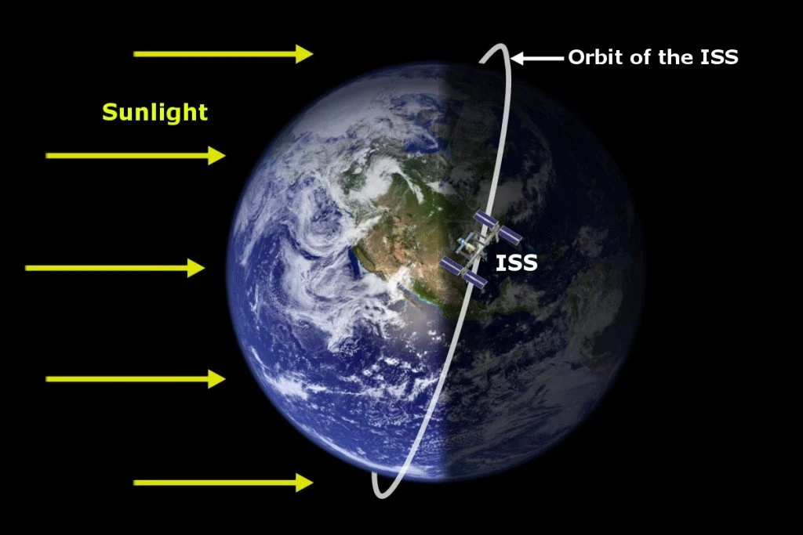
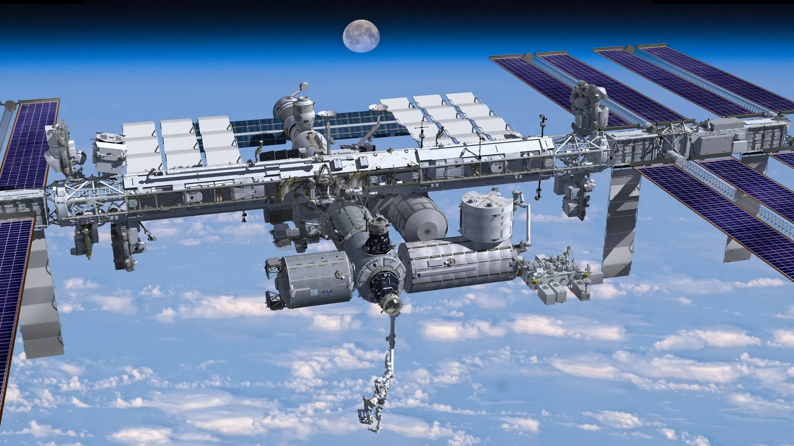
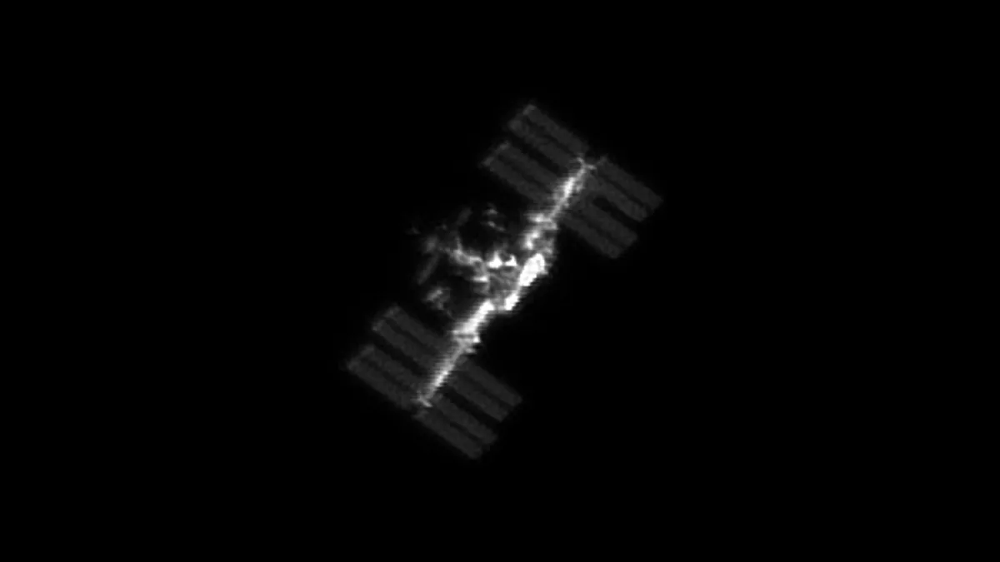
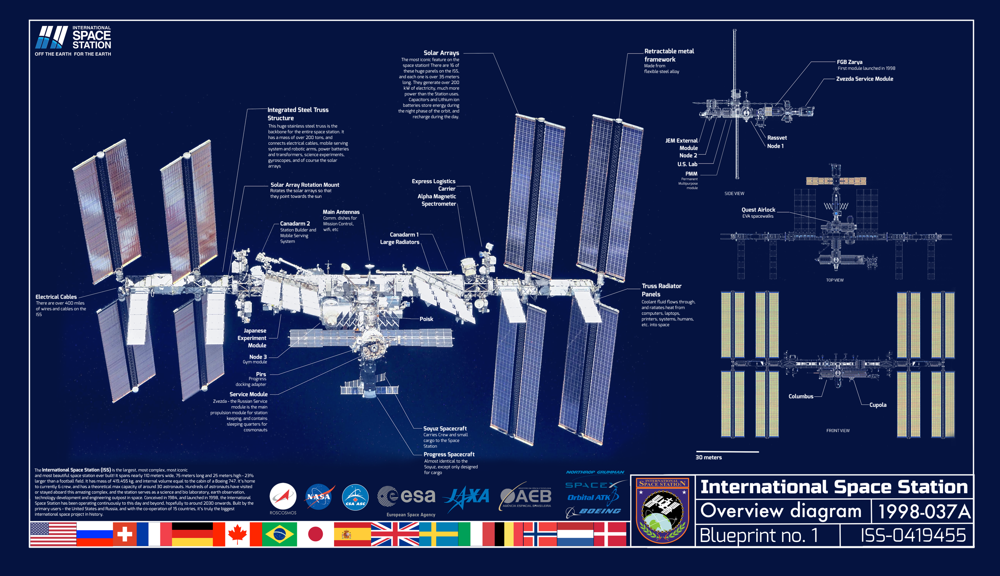

The space station travels at a speed of about 28,000 kilometers per hour.
The ISS orbits the Earth about once every 90 minutes, which means the crew onboard can see 16 sunrises and sunsets each day


ISS is the largest human-made object in space.
weighing approximately 420,000 kilograms
Since the ISS is located in low Earth orbit, it is visible from the ground under the right conditions. Many people around the world have observed the space station passing overhead at night.


The International Space Station (ISS) is the largest modular space station in low Earth orbit. The project involves five space agencies: the United States' NASA, Russia's Roscosmos, Japan's JAXA, Europe's ESA, and Canada's CSA